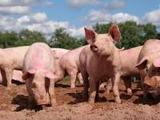

Pig

Pigs are domesticated mammals known for their intelligence, social behavior, and importance in agriculture.
Physical Characteristics
- Size: Pigs come in various sizes, with some breeds being relatively small and others larger.
- Body Structure: They have stout bodies with four legs, a snout, and a tail.
- Coat: Pigs can have different coat colors and patterns, depending on the breed.
Behavior and Habitat
- Habitat: Domestic pigs are kept on farms and in agricultural settings, while wild pigs can be found in various habitats around the world.
- Social Nature: Pigs are social animals that often live in groups, known as sounders.
- Rooting Behavior: Pigs have a natural tendency to root in the ground with their snouts, searching for food.
Diet
Pigs are omnivores and have a varied diet that includes plants, roots, fruits, and even small animals.
Significance
Pigs are important livestock animals, providing meat (pork) and other products for human consumption. They are also used for research and pet purposes.
Interesting Facts
- Intelligence: Pigs are considered highly intelligent animals, capable of learning tricks and solving problems.
- Communication: Pigs communicate through vocalizations, body language, and interactions with other pigs.
- Role in Culture: Pigs have cultural significance in various societies and are featured in stories, traditions, and religious beliefs.